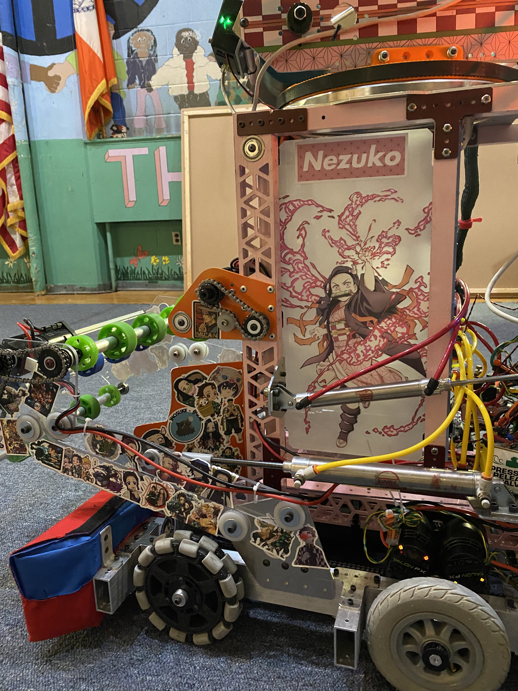
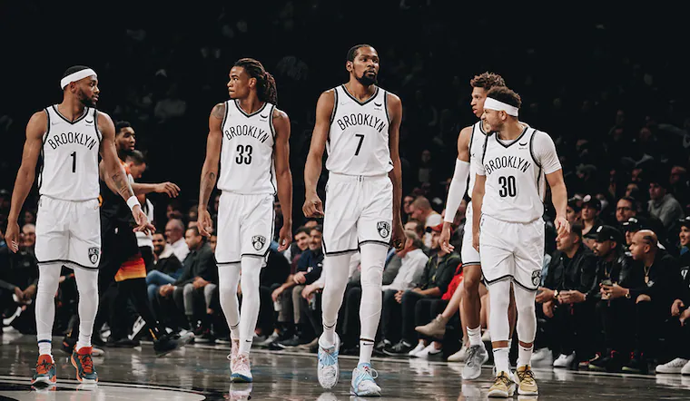
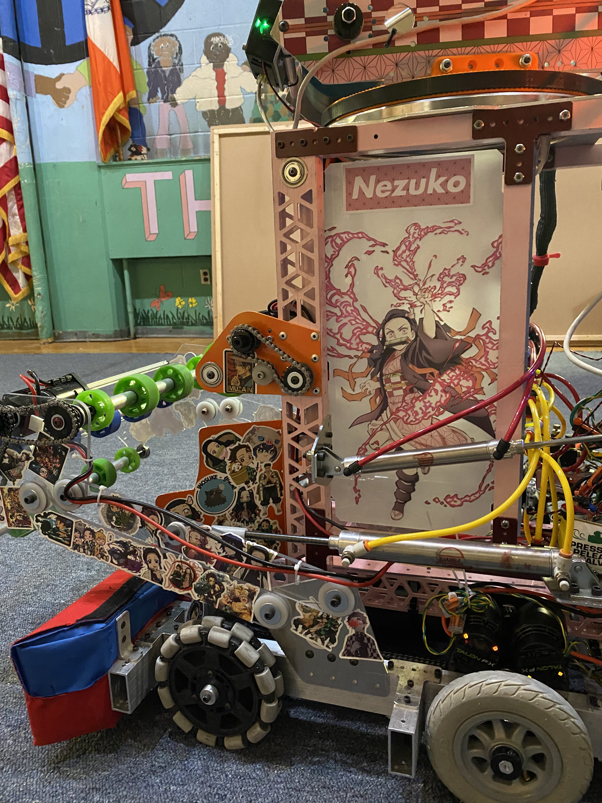
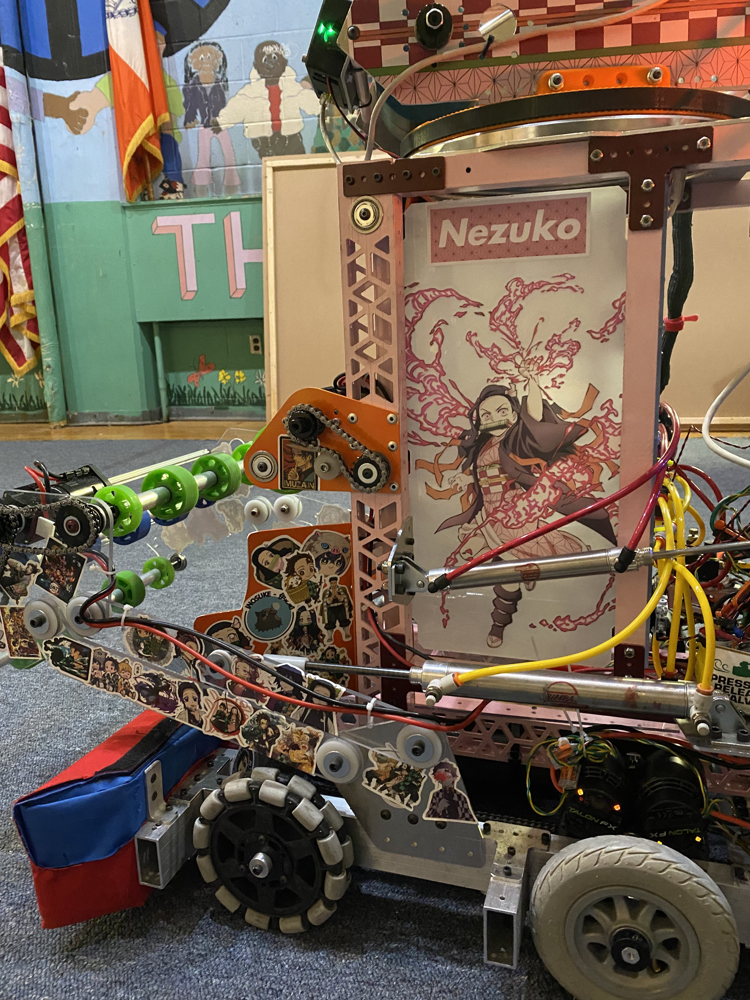

As of pre-pandemic until now, I got into fitness and tried many workout programs.
My fitness goals are that I would like to master advanced calisthenics exercises and be able to push/squat above two plates.
Robotics

One of my passions throughout highschool was Robotics. Through Robotics I learned mechanical fundamentals such as using machines like the Lathe, Drill press and the Mill machine.
Although Robotics can get intense at times when certain code or motor functions don't work, we're always able to get it done through our team support and skilled mentors.
Sports

I've been playing basketball casually since I was a kid, getting great pickup games at my local park. I didn't become a fan of the NBA until 2018
Thanks to D'Lo Russel, the Nets are as formibbadle as ever
 
